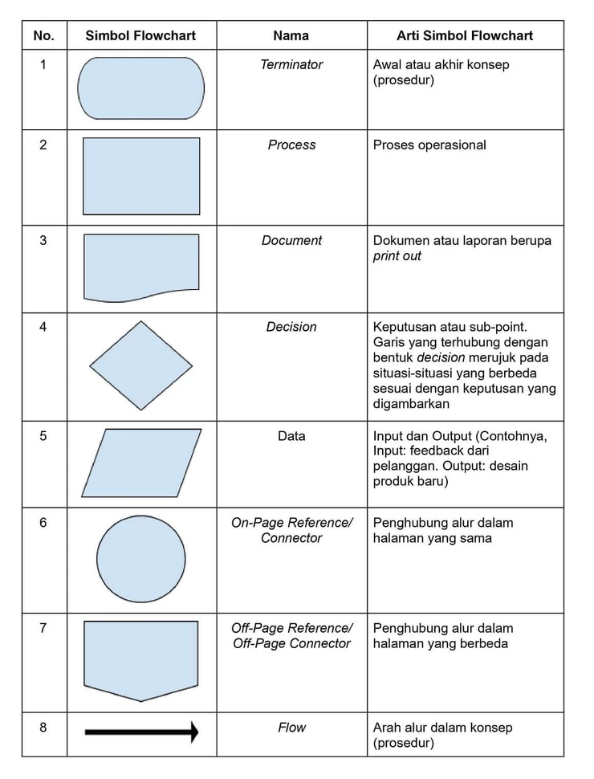

1. Logika
Logika berasal dari kata Yunani kuno logos yang berarti hasil pertimbangan akal pikiran yang dijelaskan
lewat kata dan dinyatakan dalam bahasa. Secara sederhana logika dapat diartikan dengan masuk akal. Logika dibagi menjadi dua, yaitu :
2. Algoritma
Algoritma berasal dari kata algorism yang artinya menghitung dengan angka arab. Penemunya adalah
Abu Ja'far Muhammad Ibnu Musa Al-Khawarazmi yang kini dikenal sebagai bapak aljabar. Namun inilah beberapa
pendapat para ahli tentang algoritma :
Menurut Sismoro,algoritma adalah sekumpulan instruksi atau langkah-langkah yang sudah dituliskan secara sistematis dan digunakan untuk menyelesaikan suatu persoalan atau suatu permasalahan matematika dan logika dengan bantuan komputer.
Menurut Seymour Lipschutz dan Marc Lipson algoritma adalah sebuah daftar yang berisi langkah demi langkah yang terhingga yang berasal dari berbagai macam perintah yang sudah dijelaskan supaya bisa digunakan untuk menyelesaikan atau memecahkan suatu permasalahan yang ada.
Menurut S. E. Goodman dan S.T. Hedetniemi, algoritma adalah suatu urutan atau susunan yang sifatnya terbatas dari berbagai operasi yang sudah bisa dijelaskan serta setiap operasi membutuhkan waktu dan memori yang terbatas untuk memecahkan suatu permasalahan tertentu.
3. Flowchart
Flowchart adalah sebuah bagan alir yang berisikan langkah-langkah yang disusun secara sistematis dengan
simbol atau notasi.
